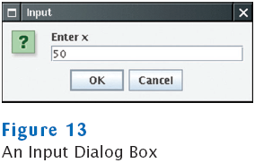

previous
|
start
|
next
Reading Text Input
A graphical application can obtain input by displaying a
JOptionPane
The
showInputDialog
method displays a prompt and waits for user input
The
showInputDialog
method returns the string that the user typed
String input = JOptionPane.showInputDialog("Enter x");
double x = Double.parseDouble(input);

previous
|
start
|
next